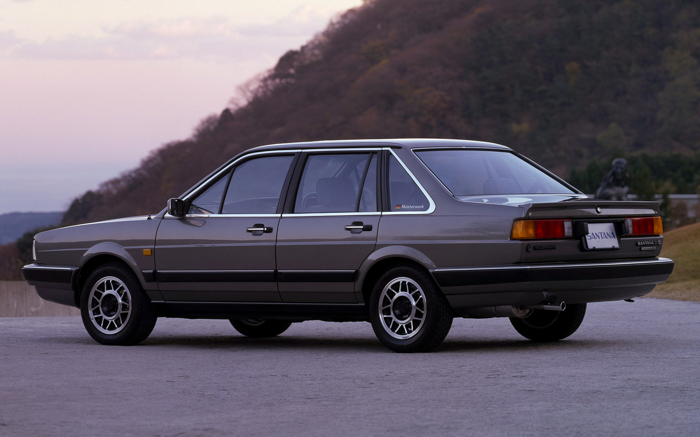
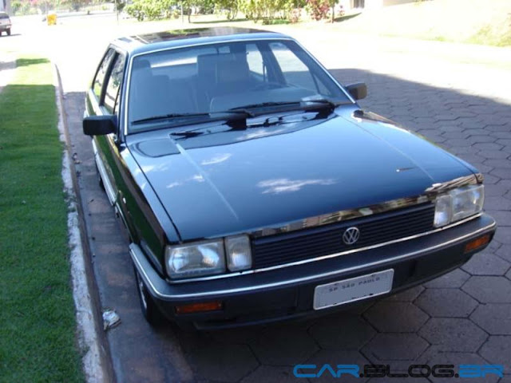
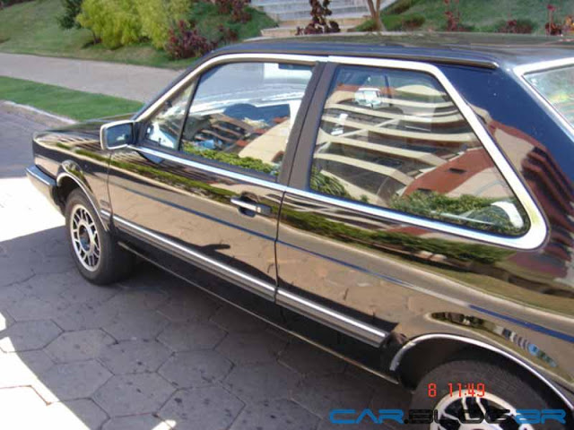
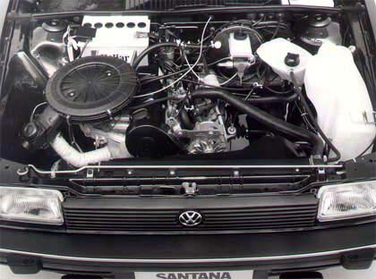
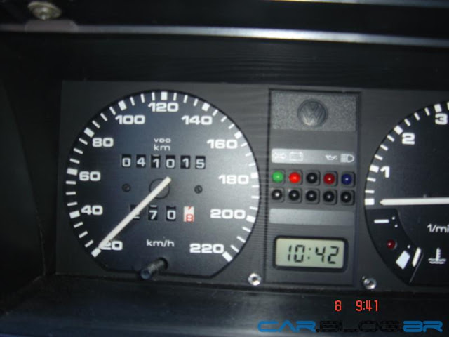
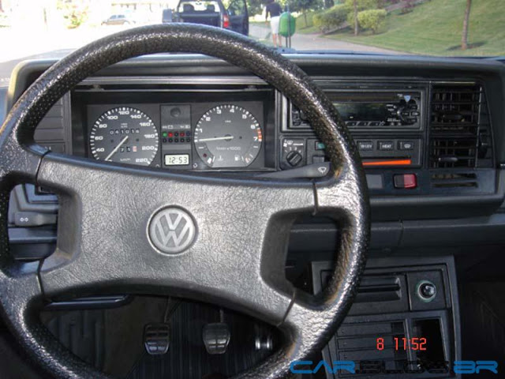
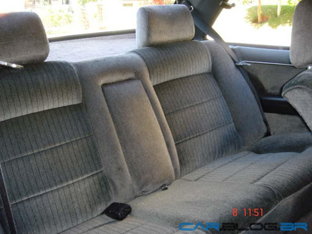

Santana
- volkswagem
- 1989

O Volkswagen Santana foi o carro que colocou a montadora alemã no mercado de automóveis de luxo no Brasil. Lançado em 1984, ele dispunha de um motor 1.8L e um nível de acabamento e tecnologia não encontrado em seus rivais à época: Del Rey e Opala Diplomata.

Além disso, o estilo do Santana, com linhas esguias, sóbrias e elegantes, fruto de um projeto mais moderno, destacava-se nas ruas. O modelo de duas portas, porém, tinha um visual mais esportivo, enquanto a versão sedã de quatro portas tinha um estilo ainda mais conservador.

A versão apresentada neste artigo é um modelo GLS 1989 com motor 2.0L, que já continha as inovações de estilo incorporadas em 1987: para-choques envolventes e novos faróis dianteiros para o modelo topo de gama. Nesse ano também foi introduzida a nova nomenclatura das versões: CL, GL e GLS.

O motor 2.0 tinha 112 cv e 17,5 kgfm, com o qual atingia, segundo a Volkswagen, a velocidade máxima de 187 km/h, número esse não confirmado pelos testes da revista Quatro Rodas, onde o modelo a gasolina atingiu 165 Km/h e o a álcool, 167 Km/h.

A aceleração de 0 a 100 Km/h era feita em 11,4 segundos para o modelo movido com combustível vegetal, e 12,1 segundos no modelo a gasolina. É importante observar que na época não existiam os motores flex, o que obrigava ao comprador optar por um modelo a gasolina ou a álcool.

Na final da década de 80 o Santana fazia sucesso no mercado brasileiro, colocando-se sempre entre os dez carros mais vendidos, chegando a ficar em quinto lugar no ranking, superando modelos menores e mais baratos como Uno e o Voyage.

O acabamento interno da versão GLS era quase irrepreensível: revestimento dos bancos e portas em veludo de elevada qualidade, que, associado aos encaixes perfeitos, davam aos passageiros do Santana um ambiente sofisticado, aconchegante e acolhedor.